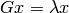

Eigensolvers and SVD¶
Hermitian eigensolver¶
Elemental provides a collection of routines for both full and partial solution of the Hermitian eigenvalue problem

where A is the given Hermitian matrix, and unitary Z and real diagonal
 are sought. In particular, with the eigenvalues and
corresponding eigenpairs labeled in non-decreasing order, the three basic
modes are:
are sought. In particular, with the eigenvalues and
corresponding eigenpairs labeled in non-decreasing order, the three basic
modes are:
- Compute all eigenvalues or eigenpairs,
 or
or
 .
. - Compute the eigenvalues or eigenpairs with a given range of indices, say
 or
or  ,
with
,
with  .
. - Compute all eigenpairs (or just eigenvalues) with eigenvalues lying in a
particular half-open interval, either
![\{\omega_i \;|\; \omega_i \in (a,b] \}](../_images/math/9320ddce33d0bfda391997d7e37b2d001f872fee.png) or
or
![\{ (x_i,\omega_i) \;|\; \omega_i \in (a,b] \}](../_images/math/6ec0dab8ba527cd5a644356242b765d59b94ed17.png) .
.
As of now, all three approaches start with Householder tridiagonalization (ala advanced::HermitianTridiag) and then call Matthias Petschow and Paolo Bientinesi’s PMRRR for the tridiagonal eigenvalue problem.
Note
Please see the Tuning parameters section for information on optimizing the reduction to tridiagonal form, as it is the dominant cost in all of Elemental’s Hermitian eigensolvers.
Full spectrum computation¶
- void advanced::HermitianEig(UpperOrLower uplo, DistMatrix<double, MC, MR>& A, DistMatrix<double, VR, STAR>& w)¶
Compute the full set of eigenvalues of the double-precision real symmetric distributed matrix A.
- void advanced::HermitianEig(UpperOrLower uplo, DistMatrix<std::complex<double>, MC, MR>& A, DistMatrix<double, VR, STAR>& w)¶
Compute the full set of eigenvalues of the double-precision complex Hermitian distributed matrix A.
- void advanced::HermitianEig(UpperOrLower uplo, DistMatrix<double, MC, MR>& A, DistMatrix<double, VR, STAR>& w, DistMatrix<double, MC, MR>& Z)¶
Compute the full set of eigenpairs of the double-precision real symmetric distributed matrix A.
- void advanced::HermitianEig(UpperOrLower uplo, DistMatrix<std::complex<double>, MC, MR>& A, DistMatrix<double, VR, STAR>& w, DistMatrix<double, MC, MR>& Z)¶
Compute the full set of eigenpairs of the double-precision complex Hermitian distributed matrix A.
Index-based subset computation¶
- void advanced::HermitianEig(UpperOrLower uplo, DistMatrix<double, MC, MR>& A, DistMatrix<double, VR, STAR>& w, int a, int b)¶
Compute the eigenvalues of a double-precision real symmetric distributed matrix A with indices in the range
 .
.
- void advanced::HermitianEig(UpperOrLower uplo, DistMatrix<std::complex<double>, MC, MR>& A, DistMatrix<double, VR, STAR>& w, int a, int b)¶
Compute the eigenvalues of a double-precision complex Hermitian distributed matrix A with indices in the range
.
- void advanced::HermitianEig(UpperOrLower uplo, DistMatrix<double, MC, MR>& A, DistMatrix<double, VR, STAR>& w, DistMatrix<double, MC, MR>& Z, int a, int b)¶
Compute the eigenpairs of a double-precision real symmetric distributed matrix A with indices in the range
.
- void advanced::HermitianEig(UpperOrLower uplo, DistMatrix<std::complex<double>, MC, MR>& A, DistMatrix<double, VR, STAR>& w, DistMatrix<double, MC, MR>& Z)
Compute the eigenpairs of a double-precision complex Hermitian distributed matrix A with indices in the range
.
Range-based subset computation¶
- void advanced::HermitianEig(UpperOrLower uplo, DistMatrix<double, MC, MR>& A, DistMatrix<double, VR, STAR>& w, double a, double b)¶
Compute the eigenvalues of a double-precision real symmetric distributed matrix A lying in the half-open interval
![(a,b]](../_images/math/cdf3085063293f29962808ba253dec1faa9866fb.png) .
.
- void advanced::HermitianEig(UpperOrLower uplo, DistMatrix<std::complex<double>, MC, MR>& A, DistMatrix<double, VR, STAR>& w, double a, double b)¶
Compute the eigenvalues of a double-precision complex Hermitian distributed matrix A lying in the half-open interval
.
- void advanced::HermitianEig(UpperOrLower uplo, DistMatrix<double, MC, MR>& A, DistMatrix<double, VR, STAR>& w, DistMatrix<double, MC, MR>& Z, double a, double b)¶
Compute the eigenpairs of a double-precision real symmetric distributed matrix A with eigenvalues lying in the half-open interval
.
- void advanced::HermitianEig(UpperOrLower uplo, DistMatrix<std::complex<double>, MC, MR>& A, DistMatrix<double, VR, STAR>& w, DistMatrix<double, MC, MR>& Z)
Compute the eigenpairs of a double-precision complex Hermitian distributed matrix A with eigenvalues lying in the half-open interval
.
Sorting the eigenvalues/eigenpairs¶
Since extra time is required in order to sort the eigenvalues/eigenpairs, they are not sorted by default. However, this can be remedied by the appropriate routine from the following list:
- void advanced::SortEig(DistMatrix<R, VR, STAR>& w)¶
Sort a column-vector of real eigenvalues into non-decreasing order.
- void advanced::SortEig(DistMatrix<R, VR, STAR>& w, DistMatrix<R, MC, MR>& Z)¶
Sort a set of real eigenpairs into non-decreasing order (based on the eigenvalues).
- void advanced::SortEig(DistMatrix<R, VR, STAR>& w, DistMatrix<std::complex<R>, MC, MR>& Z)¶
Sort a set of real eigenvalues and complex eigenvectors into non-decreasing order (based on the eigenvalues).
Hermitian functions¶
Reform the matrix with the eigenvalues modified by a user-defined function. When the user-defined function is real-valued, the result will remain Hermitian, but when the function is complex-valued, the result is best characterized as normal.
Note
Since Elemental currently depends on PMRRR for its tridiagonal eigensolver, only double-precision results are supported as of now.
- void advanced::RealHermitianFunction(UpperOrLower uplo, DistMatrix<R, MC, MR>& A, const RealFunctor& f)¶
Modifies the eigenvalues of the passed-in real symmetric matrix by replacing each eigenvalue
 with
with  .
RealFunctor is any
class which has the member function R operator()( R omega ) const.
See examples/advanced/RealSymmetricFunction.cpp for an example usage.
.
RealFunctor is any
class which has the member function R operator()( R omega ) const.
See examples/advanced/RealSymmetricFunction.cpp for an example usage.
- void advanced::RealHermitianFunction(UpperOrLower uplo, DistMatrix<std::complex<R>, MC, MR>& A, const RealFunctor& f)¶
Modifies the eigenvalues of the passed-in complex Hermitian matrix by replacing each eigenvalue
with
.
RealFunctor can be any class which has the member function
R operator()( R omega ) const.
See examples/advanced/RealHermitianFunction.cpp for an example usage.
- void advanced::ComplexHermitianFunction(UpperOrLower uplo, DistMatrix<std::complex<R>, MC, MR>& A, const ComplexFunctor& f)¶
Modifies the eigenvalues of the passed-in complex Hermitian matrix by replacing each eigenvalue
with
 . ComplexFunctor can be any class
which has the member function std::complex<R> operator()( R omega ) const.
See examples/advanced/ComplexHermitianFunction.cpp for an example usage.
. ComplexFunctor can be any class
which has the member function std::complex<R> operator()( R omega ) const.
See examples/advanced/ComplexHermitianFunction.cpp for an example usage.
Hermitian pseudoinverse¶
Computes the pseudoinverse of a Hermitian matrix through a customized version of advanced::RealHermitianFunction which used the eigenvalue mapping function
![\[
f(\omega_i) = \left\{\begin{array}{cc}
1/\omega_i, & |\omega_i| \ge \epsilon \, n \, ||A||_2 \\
0, & \mbox{otherwise}
\end{array}\right.,
\]](../_images/math/d1a898238083da90233e8848705c6a513277300f.png)
where  is the relative machine precision,
is the relative machine precision,
 is the height of
is the height of  , and
, and  can be computed
as the maximum absolute value of the eigenvalues of .
can be computed
as the maximum absolute value of the eigenvalues of .
- advanced::HermitianPseudoinverse(UpperOrLower uplo, DistMatrix<R, MC, MR>& A)¶
Computes the pseudoinverse of a distributed real symmetric matrix with data stored in the uplo triangle.
- advanced::HermitianPseudoinverse(UpperOrLower uplo, DistMatrix<std::complex<R>, MC, MR>& A)¶
Computes the pseudoinverse of a distributed complex Hermitian matrix with data stored in the uplo triangle.
Skew-Hermitian eigensolver¶
TODO: Describe  and advanced::SkewHermitianEig here.
Hermitian generalized-definite eigensolvers¶
TODO: Describe  ,
,  , and
, and
 cases and advanced::HermitianGenDefiniteEig.
cases and advanced::HermitianGenDefiniteEig.
Unitary eigensolver¶
Not yet written, will likely be based on Ming Gu’s unitary Divide and Conquer algorithm for unitary Hessenberg matrices.
Normal eigensolver¶
Not yet written, will likely be based on Angelika Bunse-Gerstner et al.’s Jacobi-like method for simultaneous diagonalization of the commuting Hermitian and skew-Hermitian portions of the matrix.
General eigensolver¶
Not yet written, will likely eventually include Greg Henry et al.’s and Robert Granat et al.’s approaches.
Hermitian SVD¶
Not yet written, but relatively trivial, as the SVD of a Hermitian matrix can easily be computed from its eigenvalue decomposition.
General SVD¶
Not yet written; will likely be based on the Ming Gu’s approach to Divide and Conquer algorithm for the bidiagonal SVD.